<!DOCTYPE html>
<html lang="en">
<head>
    <meta charset="UTF-8">
    <meta name="viewport" content="width=device-width, initial-scale=1.0">
    <title>Pagina de Anime</title>
    <link rel="stylesheet" href="../css/estilo.css">
</head>
<body>
</html>
    <div class="padre">
        <header>
            <table>
                <tr>
                    <td><div class="logo">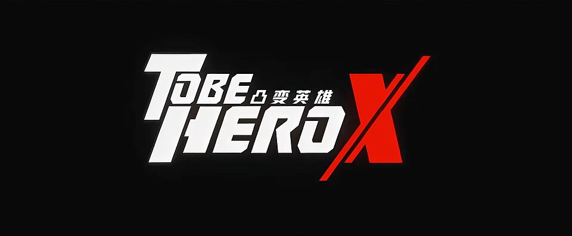 </div></td>
                    <td><div class="titulo">Tobe Hero X</div></td>
                </tr>
            </table>
        </header>
        <nav>
            <table>
                <tr>
                    <td><div class="caja"><a href="../index.html">Inicio</a></div></td>
                    <td><div class="caja"><a href="../pag/Demon_Slayer.html">Demon Slayer</a></div></td>
                    <td><div class="caja"><a href="../pag/Frieren.html">Frieren</a></div></td>
                    <td><div class="caja"><a href="../pag/Solo_Leveling.html">Solo Leveling</a></div></td>
                    <td><div class="caja"><a href="#">Tobe Hero X</a></div></td>
                    <td><div class="caja"><a href="../pag/Your_Name.html">Your Name</a></div></td>
                    <td><div class="caja"><a href="../pag/Contacto.html">Contacto</a></div></td>
                </tr>
            </table>
        </nav>
        <h1 class="sub">HERO RANKINGS</h1>
        <table border="1px" style="border-collapse: collapse; width: 100%; text-align: center;">
                <thead>
                    <tr style="background-color: rgb(158, 201, 201);font-weight: bold;">
                        <th>1°</th>
                        <td>2°</td>
                        <td>3°</td>
                        <td>4°</td>
                        <td>5°</td>
                        <td>6°</td>
                        <td>7°</td>
                    </tr>
                </thead>
                <body>
                    <tr style="background-color: rgb(161, 136, 183);font-weight: bold;">
                        <th>Hero X</th>
                        <td>Lin Ling</td>
                        <td>Nice</td>
                        <td>Lucky Cyan</td>
                        <td>Ghostblade</td>
                        <td>Queen</td>
                        <td>E-Soul</td>
                    </tr>
                </body>
                <body>
                    <tr style="background-color: cadetblue;">
                        <td>Omnipresencioa</td>
                        <td>Invocacion de Hero Soul</td>
                        <td>Control de la electricidad</td>
                        <td>Manipulacion de la probabilidad</td>
                        <td>Velocidad fastasmal</td>
                        <td>Dominio de reglas</td>
                        <td>Poder basado en la fe</td>
                    </tr>
                </body>
            </table>
        <section>
            <h1 class="sub">Tobe Hero X</h1>
            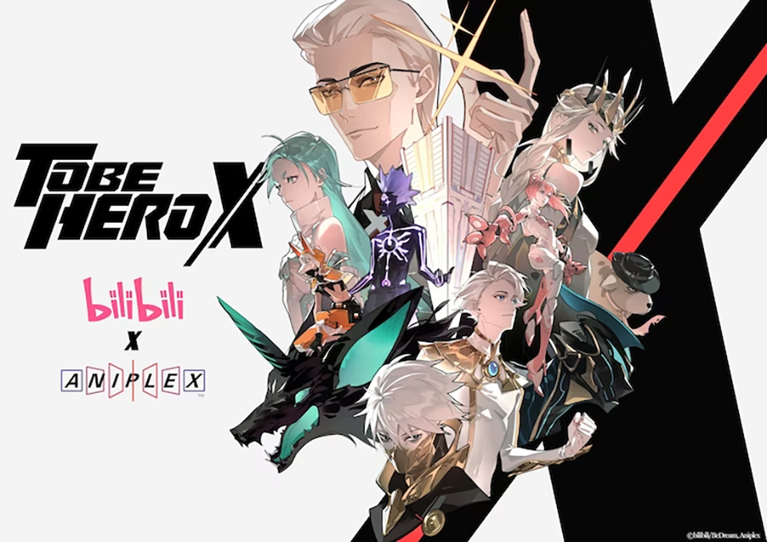
            <h2 class="tex">Trama</h2>
            <p class="texto">La historia se desarrolla en un mundo futurista donde los superpoderes están dictados por la percepción pública. Funciona casi como un sistema de retroalimentación o un algoritmo condicional: la variable de entrada es la "Fe" o el "Valor de Confianza" (Trust Value) de la gente.</p>
            <p class="texto">Si el público cree firmemente que un héroe puede volar o es invencible, el héroe obtiene esas habilidades.
                Si la popularidad del héroe cae a cero o la gente deja de creer en él, pierde sus poderes instantáneamente.
                Debido a esta lógica, ser un héroe es una industria despiadada gestionada por la Comisión de Asuntos de Héroes, donde los héroes actúan como "idols" o celebridades patrocinadas por corporaciones. El conflicto principal surge cuando los héroes deben mantener una imagen falsa para no perder sus puntos, mientras lidiaban con traumas, corrupción y la presión de un sistema que los ve como productos.
            </p>
            <h2 class="tex">Personajes Principales</h2>
            <h3 class="tex">Hero X (La anomalía del sistema)</h3>
            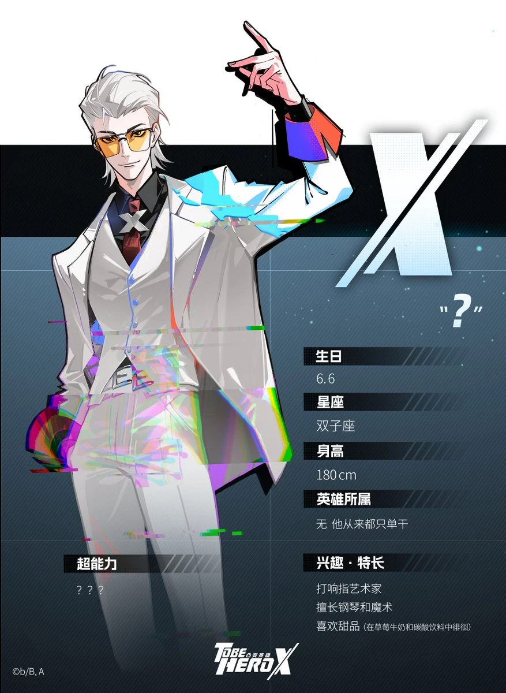
            <p class="texto">Es el protagonista titular y el actual héroe Número 1. A diferencia del resto, X opera en el anonimato total y oculta su identidad con un traje y casco. Lo fascinante de X es que funciona como un "error no manejado" dentro de las reglas de la Comisión: como nadie sabe quién es ni cuáles son sus límites, la imaginación del público sobre él es infinita, otorgándole un poder absoluto. Es el único consciente de lo corrupta que es la industria.</p>
                <p class="texto">Su arco es sobre la lucha contra el sistema desde adentro, usando su estatus de "anomalía" para exponer la verdad y proteger a los héroes reales que son explotados por la Comisión.</p>
            <h3 class="tex">Lin Ling / Nice</h3>
            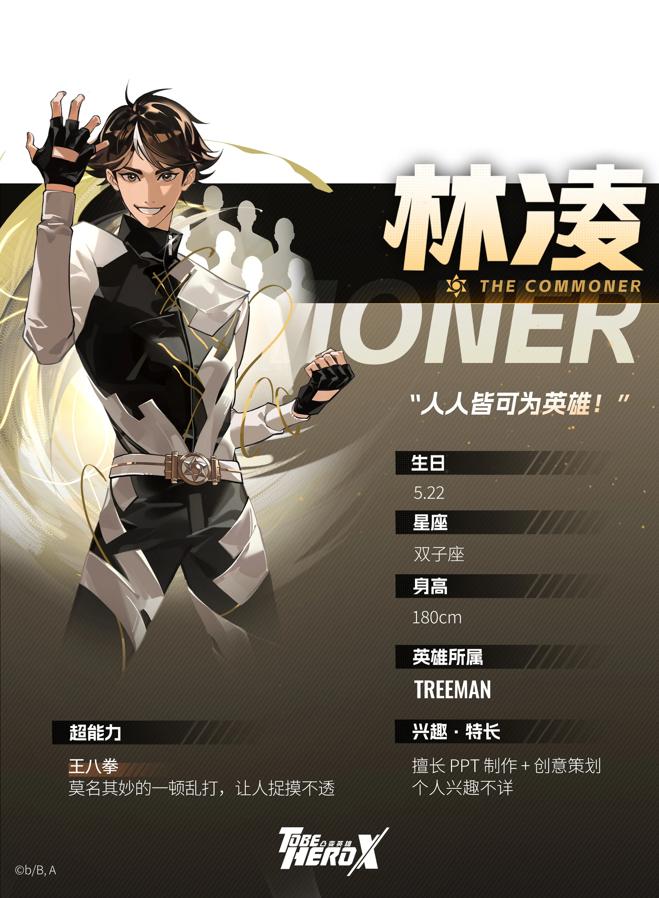
            <p class="texto">Es el protagonista del primer arco de la serie. Lin Ling es un oficinista común y corriente que, tras un incidente, es obligado por una corporación a asumir la identidad secreta de "Nice", un héroe de élite que supuestamente murió. Lin tiene que fingir ser perfecto, lidiando con el terror de perder sus "Puntos de Confianza" y descubriendo las falsedades del mundo heroico.</p>
                <p class="texto">Su arco es una crítica a la cultura de la fama y la presión social, mostrando cómo alguien común puede ser explotado por un sistema que valora más la imagen que la realidad.</p>
            <h3 class="tex">Queen (Liu Yuwei)</h3>
            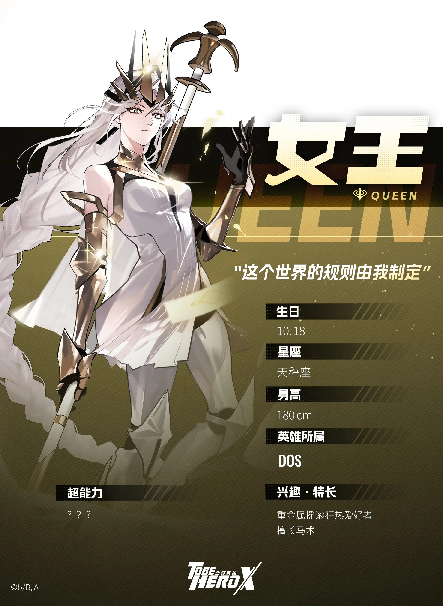
            <p class="texto">La heroína femenina más popular. Es una joven prodigio que busca convertirse en la número 1 para cambiar el sistema desde adentro y abolir la corrupción de la Comisión de Héroes. Sufre una gran crisis tras ser derrotada fácilmente por X en un torneo.</p>
            <p class="texto">Su arco es sobre la lucha por el poder y la justicia, mostrando cómo alguien con buenas intenciones puede verse corrompida por el sistema que intenta reformar.</p>
            <h2 class="tex">Personajes Secundarios (Héroes de Alto Rango)</h2>
            <p class="texto">El sistema se sostiene gracias a un ecosistema de otros héroes que representan diferentes caras de la fama</p>
            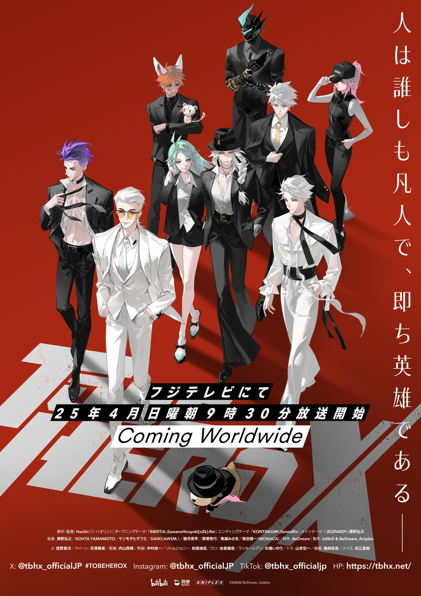
            <h3 class="tex">Lucky Cyan</h3>
            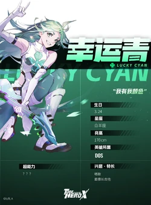
            <p class="texto">Una heroína idol cuyo poder es, literalmente, la "buena suerte". Creció en un orfanato que terminó convirtiéndose en un culto que la adoraba como a una deidad, aislándola del mundo real.</p>
            <p class="texto">Su arco es sobre la búsqueda de la identidad y la libertad, mostrando cómo alguien que siempre ha sido protegido por la adoración de otros lucha por encontrar su propio camino.</p>
            <h3 class="tex">Moon</h3>
            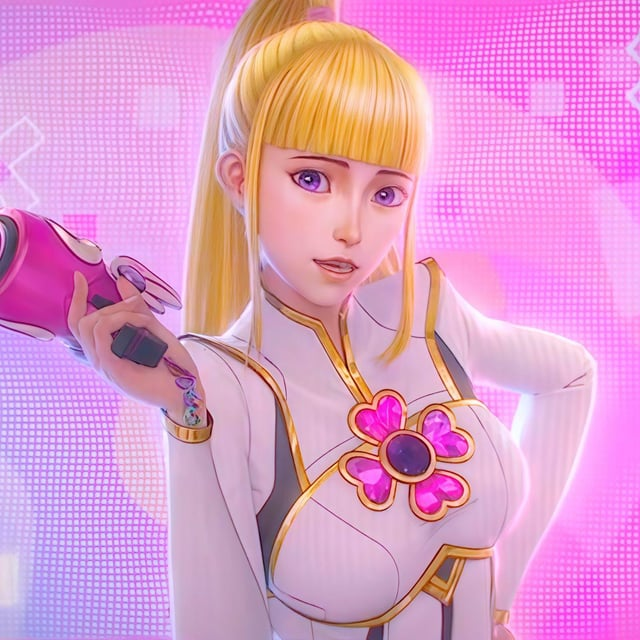
            <p class="texto">Una heroína de una corporación rival y la "novia" oficial de Nice (una relación creada por puro marketing, aunque Lin Ling realmente siente algo por ella).</p>
            <p class="texto">Su arco es sobre la manipulación y el amor falso, mostrando cómo alguien puede ser utilizado como un peón en un juego de poder, pero también cómo puede encontrar su propia agencia dentro de ese sistema.</p>
            <h3 class="tex">Ghostblade y E-Soul</h3>
            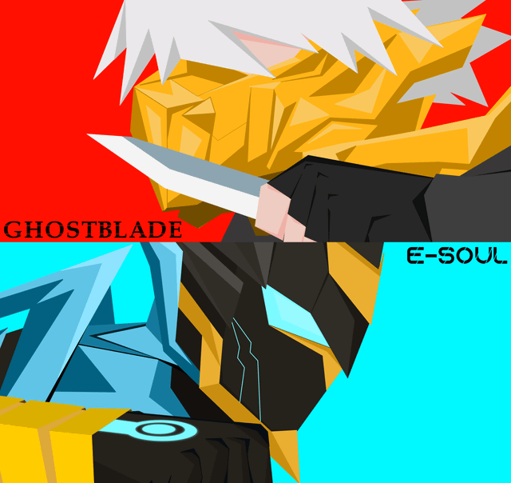
            <p class="texto">Son héroes más oscuros (o "caídos"). Representan lo que pasa cuando el trauma, la violencia y la pérdida destruyen la moral de un héroe, convirtiéndolos en asesinos que el sistema tolera solo porque son populares.</p>
            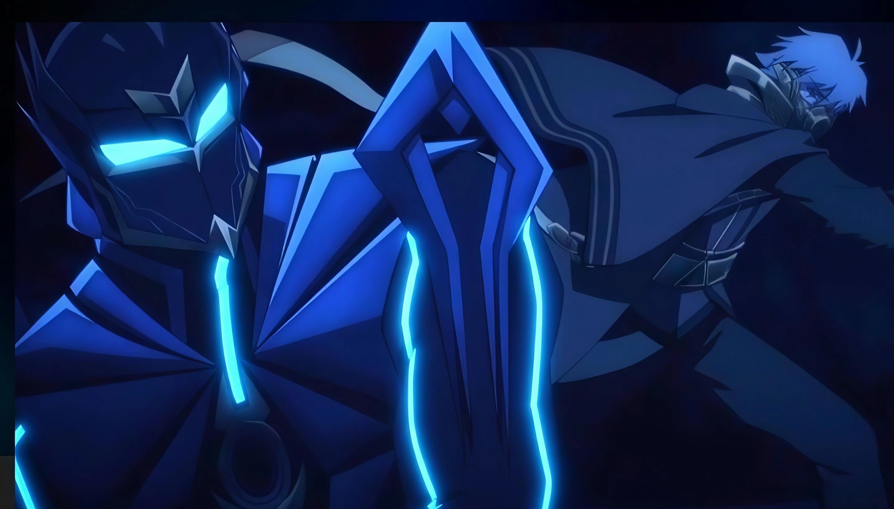
            <p class="texto">Sus arcos son sobre la redención y la venganza, mostrando cómo el sistema puede crear monstruos, pero también cómo esos monstruos pueden luchar por recuperar su humanidad.</p>
            <h2 class="tex">Los Antagonistas Spotlight (Search Light)</h2>
            <p class="texto">Es un grupo terrorista y el principal antagonista en las sombras. Ellos buscan a personas comunes que están sufriendo abusos laborales, desesperación o estrés, y les entregan dispositivos que canalizan todo ese "Miedo" acumulado, transformando a civiles normales en monstruos destructivos.</p>
            <h3 class="tex">El Padre de Queen</h3>
            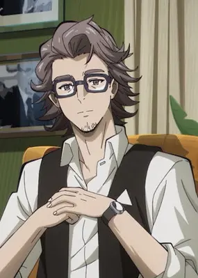
            <p class="texto">Un empresario corrupto que se beneficia de la industria de los héroes. Es el antagonista principal del arco de Queen, ya que es responsable de su caída y manipulación.
                En un giro trágico, se revela que el líder de esta organización terrorista es, en secreto, el propio padre adoptivo de Queen (el periodista Liu Zhen), quien busca destruir la sociedad actual manipulando el terror
            </p>
            <p class="texto">Su arco es sobre la corrupción y la redención, mostrando cómo alguien que finge ayudar.
        </section>
        
        <footer>
            <h5>Diseñado por: Nehemias Corine Abalos - UMSA,2026</h5>
        </footer>
    </div>
</body>
</html>